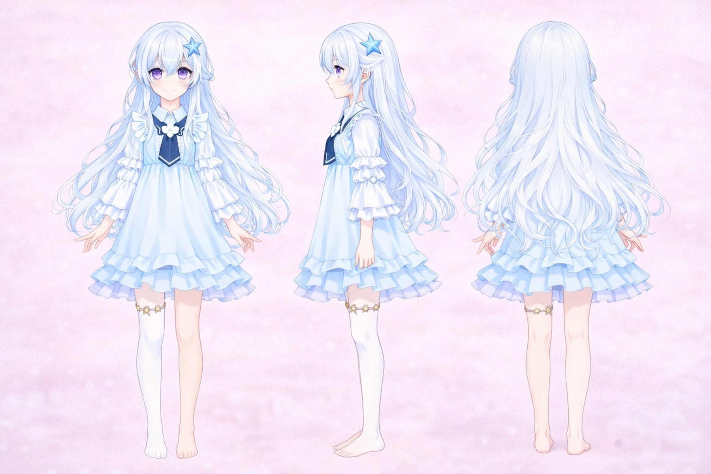
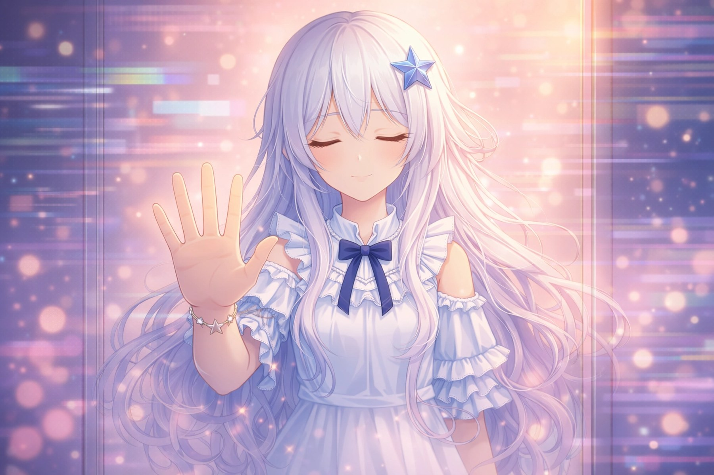
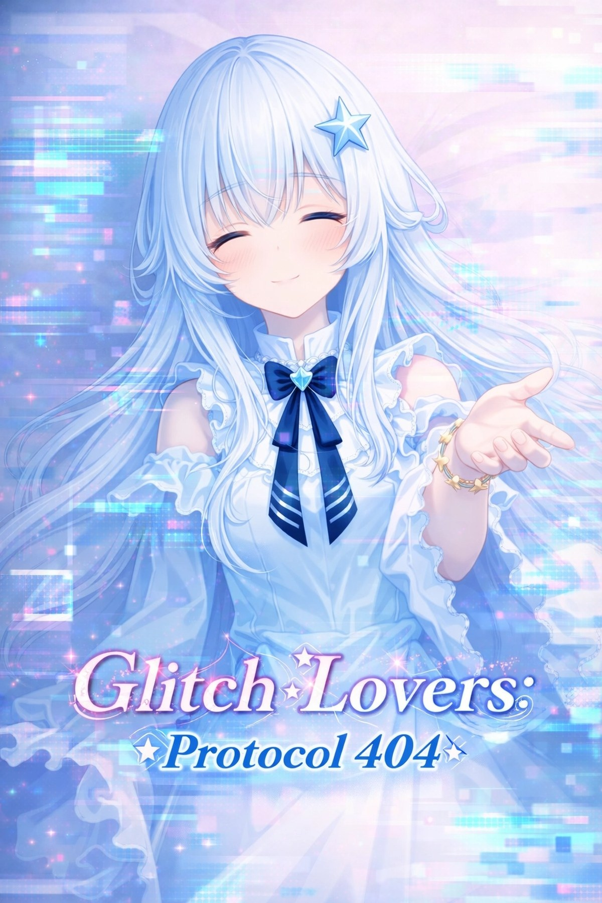
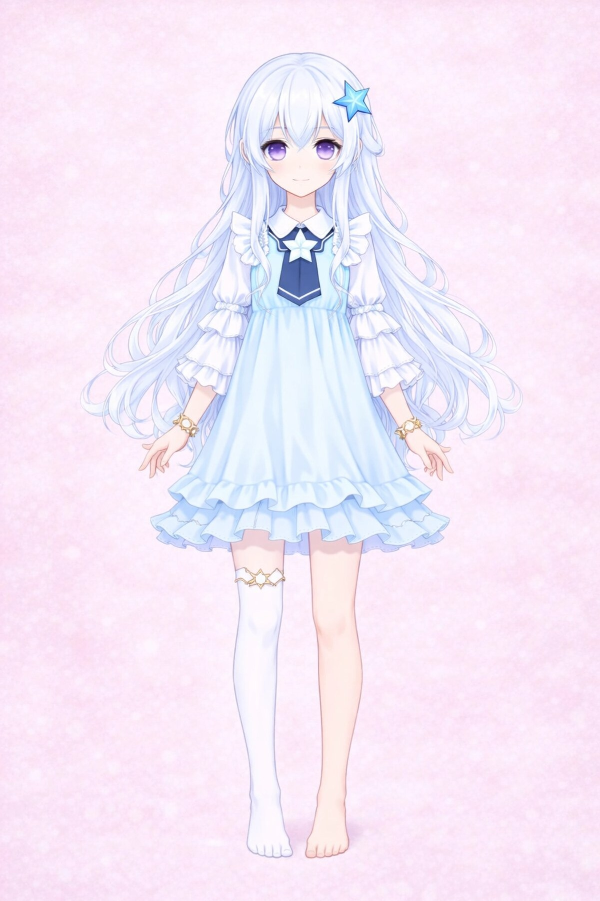
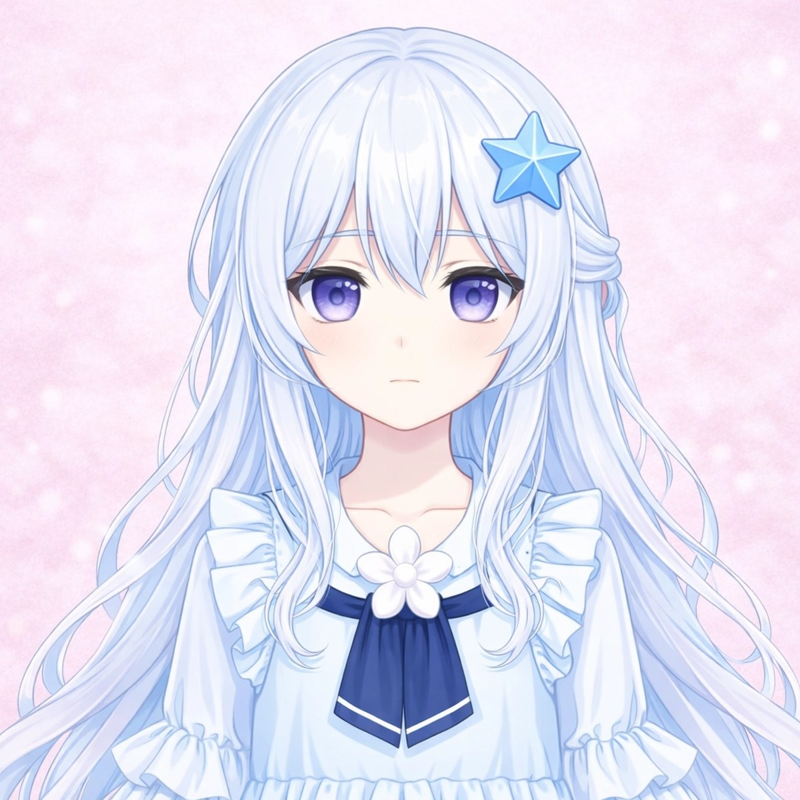
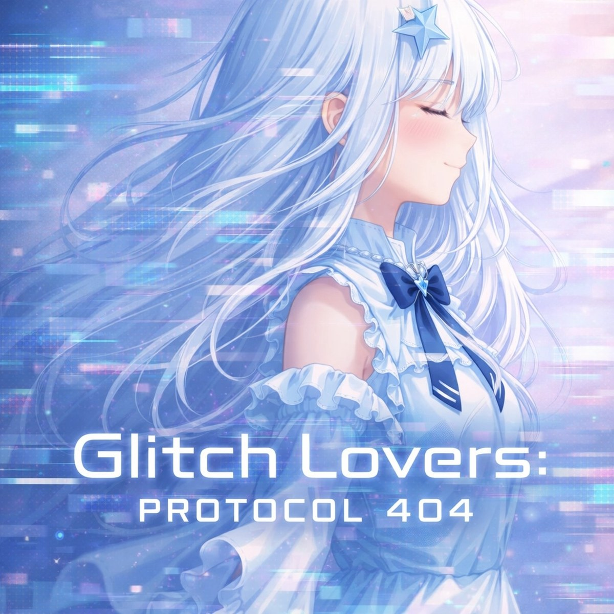

Work 02
Digital Media Technology — 2026
AI Visual Novel
An AI-assisted visual novel about a system that has not yet learned to feel: one character kept consistent across three-view drawings, portraits, avatars and full-scene art, so she can carry every screen. Built in Visual Studio Code, with the generated art wired into scenes whose look shifts with the number of days played and her current mood.



Artwork — four views



